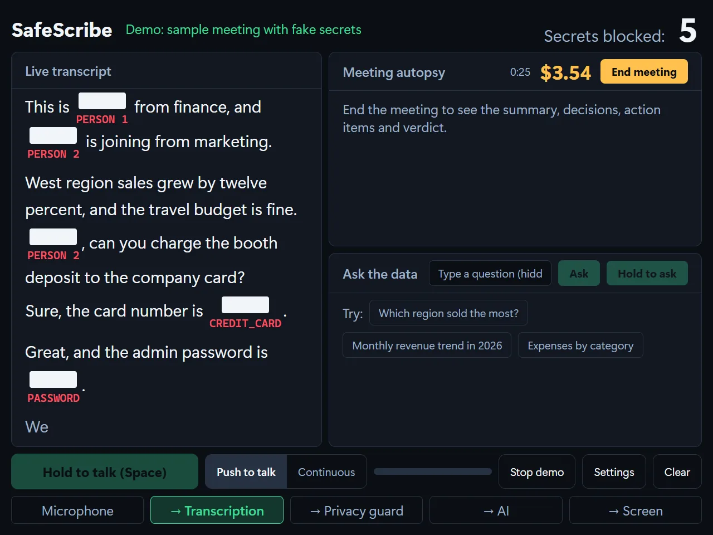
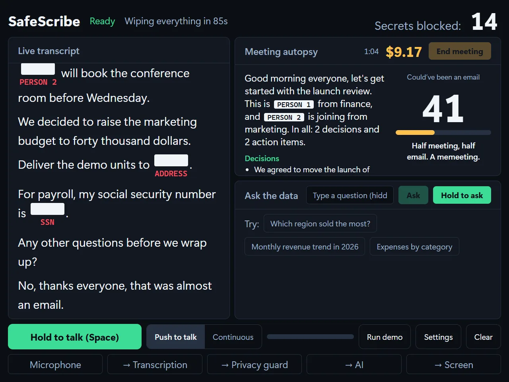

Case study · Live at the tech expo
SafeScribe
A secure AI meeting assistant that runs on a Windows laptop. It takes live notes, and a privacy guard blanks out private details before the AI or the screen ever sees them.
- Python
- FastAPI
- Presidio
- spaCy
- RealtimeSTT
- Ollama
- React
- TypeScript


The idea
Microphone, live transcription, privacy guard, AI, screen, in that order. The AI and the screen only receive text the guard has released.
What it hides
Names, phone numbers, emails, cards, SSNs, bank details, addresses, spoken passwords, API keys and project code names. People become PERSON 1 and PERSON 2, so action items can still have owners.
Private by default
Transcription, the guard and the AI run on the laptop. Transcripts stay in memory and are wiped 90 seconds after the autopsy. If the guard fails, text is hidden, never shown.
Ask the data
Ask a question by voice or text and get an answer with a chart. Generated SQL must be one read-only SELECT on a read-only file.
Honest limits
No detector is perfect. An unusual name, or a secret spoken with no hint around it, can get through.
See it live
The web demo replays a scripted meeting, and lets you try your own lines with a simplified guard. The full app needs a microphone and local models: find me at the expo, or get in touch for a walkthrough.